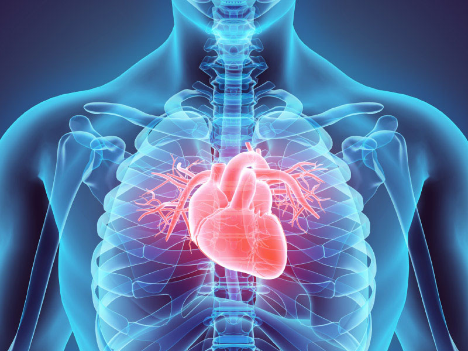

What problems can arise from new technologies, or rather from their misuse?
In the United States, heart attacks are the leading cause of death, accounting for 1 of 4 deaths annually
But it is not simply one of the ways in which it can end in death, but also in the development of other diseases that lead to that tragic fate even faster.
New technologies have contributed to the epidemic of sedentary behavior and physical inactivity. The lack of exercise could develop not only hear attacks but also:
- Cardiovascular disease
- Diabetes
- Cancer
- Obesity
- and others
The recommendation to avoid these problems is simply to avoid it from the beginning.